Frackin Races
Swipe to browse races

 Avian
Avian Floran
Floran Glitch
Glitch Human
Human Hylotl
Hylotl Novakid
Novakid Fenerox
Fenerox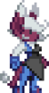Kirhos
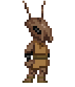Thelusian
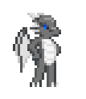Elduukhar
 Nightar
Nightar Vel'uuish
Vel'uuish AegiAkkimari
AegiAkkimari Arachne
Arachne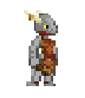Argonian
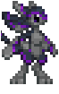Avali
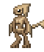Avikan
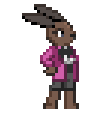Bunnykin
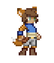Callistan
CalskieDeerfolkDeerkinDemon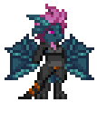Draconis
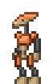Droden
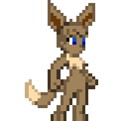Eevee
EluniteEveris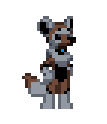Familiar
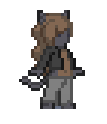Felin
GardevanGreckanGyrusenKazdraLombaxLyruLucarioMauskinMoogle Munari
Munari Ningen
Ningen Orcana
Orcana Peglaci
Peglaci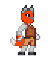Phox
Saturnian/Thaumoth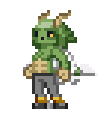Skath
SkelekinSergalSpirit GuardianTaurenTerrakin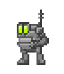Trink
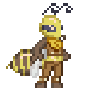Vespoid
 VieraVulpes
VieraVulpes Wasp
Wasp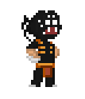Webber
XenonianZoroark